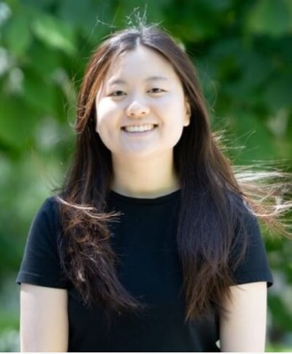
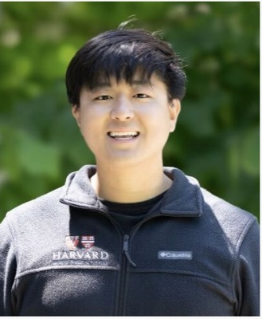
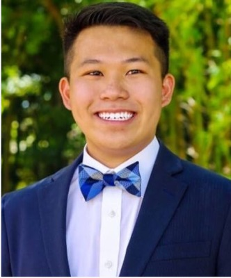
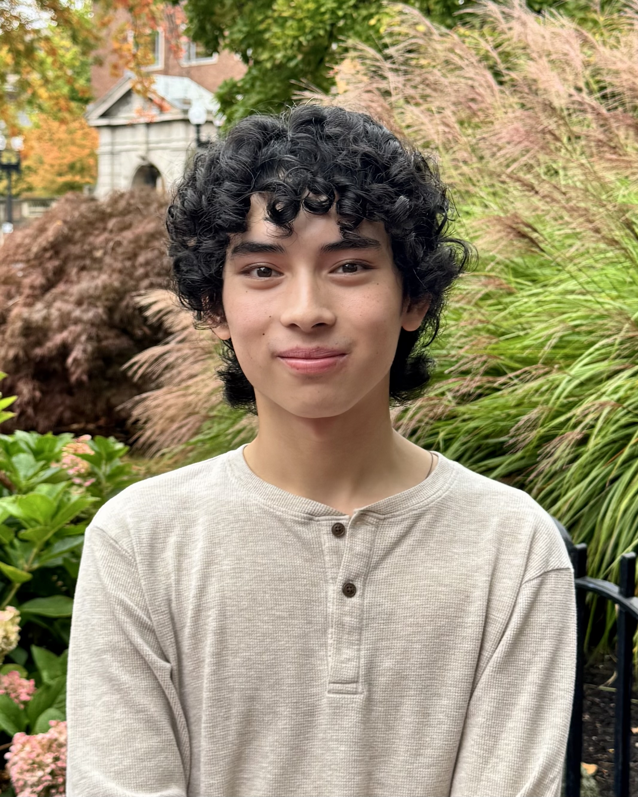
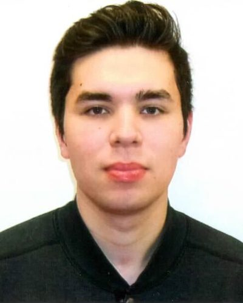
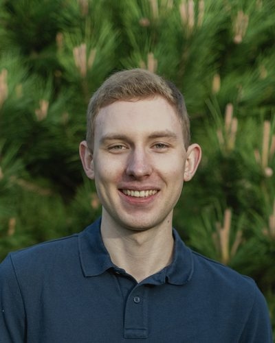
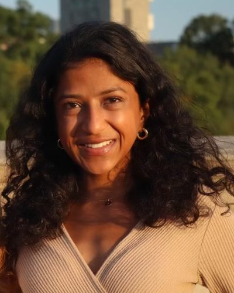
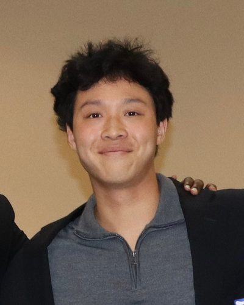
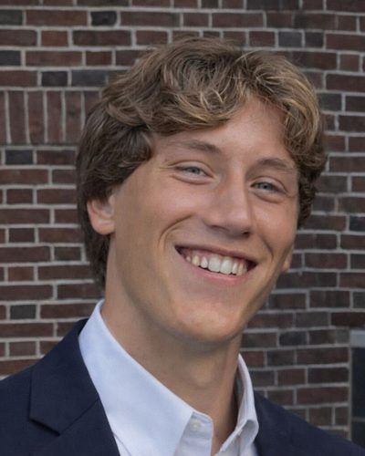

Mikey is the Principal Investigator and Assistant Professor of Stem Cell and Regenerative Biology at Harvard.

Jen is a Ph.D. candidate in Molecules, Cells, and Organisms at Harvard.

Xianyu is a Ph.D. candidate in Biological and Biomedical Sciences at Harvard.

Denny is lab manager and research scientist in the Segel Lab.
Felix is a graduate student and visiting scholar from Northeastern University.

Antonino is a third-year undergraduate student in Computational Neuroscience and Mathematics at Harvard College.
Anne is a second-year undergraduate student in Government and Integrative Biology at Harvard College.
Chun-Yi is a graduate student in Molecules, Cells, and Organisms at Harvard.

Bryce is a graduate student in Biological and Biomedical Sciences at Harvard.

Alec is a graduate student in Biomedical Informatics at Harvard.

Amulya is a graduate student in Computational and Systems Biology at MIT.

David is a second-year undergraduate student in HDRB and Statistics at Harvard College.

Matteo is a junior at Harvard College from Milan, Italy, studying Human Development & Regenerative Biology and Economics. He plans to pursue a career in medicine, with a particular interest in aging-associated diseases and orthopedics.
Emmanuel is a third-year undergraduate student in Human Developmental and Regenerative Biology at Harvard College.
Kraz is the faculty assistant for the Segel Lab.